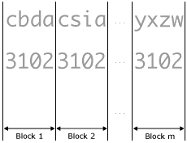
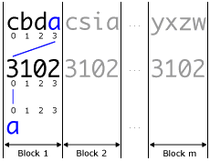
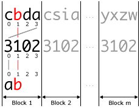
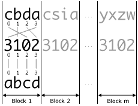
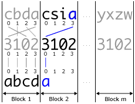
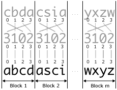

| Kürzel: | asciishop-A02 | Runde: | 2 |
| Name: | AsciiShop, Runde#02 | Evaluieren als: | Java |
| Kette: | Asciishop A | Eingabe: | String |
| Kategorie: | Bildverarbeitung | Ausgabe: | String |
Mitgelieferte Datei(en):
Abzugebende Datei(en): AsciiShop.java
Optional abzugebende Datei(en):
Ausführbar: AsciiShop
Die Klasse AsciiShop ist zu erstellen und soll eine
ausführbare Klasse sein und muss daher die public static void main(String args[])
Methode beinhalten.
Ihr Programm wird automatisch auf Korrektheit überprüft.
Die Überprüfung erfolgt durch die Ausführung der als
ausführbar bezeichneten Klasse (AsciiShop).
Das Programm liest eine angegebene Anzahl von Zeilen eines verschlüsselten ASCII-Bildes ein. Dabei gilt es zu überprüfen, ob alle Zeilen gleich lang sind. Anschließend kann ein decode-Befehl eingegeben werden, dessen Parameter den zum Entschlüsseln des ASCII-Bildes benötigten Schlüssel besitzt. Dieser wird auf seine Gültigkeit überprüft. Abschließend wird das entschlüsselte Bild sowie seine Breite und Höhe ausgegeben.
| Aufgabenstellung | Klassen und Methoden | Eingabedaten | Ausgabedaten |
| Hinweise | FAQ | Fehlerbehandlung | Testen |
In der Informatik kommt der Kryptographie eine wichtige Rolle zu. Die älteste bekannte Möglichkeit der Verschlüsselung ist die sogenannte Transposition. Bei diesem sehr einfachen Verfahren werden die einzelnen Zeichen einer Zeichenkette nach einem bestimmten Verfahren untereinander vertauscht (permutiert).
Wie bereits in Runde 1 gilt es, ein ASCII-Bild von der Standardeingabe einzulesen. Im Unterschied zur vorherigen Runde ist dieses jedoch verschlüsselt. Vor dem Einlesen des verschlüsselten Bildes wird zusätzlich der Befehl read erwartet, dessen Parameter die Anzahl der einzulesenden Zeilen angibt. So bedeutet der Befehl read 5, dass genau 5 Zeilen eingelesen werden sollen. Werden anschließend mehr oder weniger Zeilen als angegeben eingegeben, so soll "INPUT MISMATCH" ausgegeben werden. Die Fehlermeldung soll ebenfalls ausgegeben werden, wenn nicht alle Zeilen gleich lang sind. Die Bildzeilen sollen in eine Variable vom Typ String gespeichert werden, um in den folgenden Schritten das ASCII-Bild entschlüsseln und ausgeben zu können.
Nach dem Einlesen der Bildzeilen kann optional der Befehl decode folgen, dessen Parameter (auch Schlüssel genannt) die Permutation (Vertauschung) der Zeichen bestimmt. Um diese Permutation nun auf das gesamte Bild anzuwenden, werden immer Blöcke (Teile) des Bildes betrachtet, die genauso lang wie der Schlüssel sind. Jeder dieser Blöcke wird mit dem selben Schlüssel permutiert, sprich entschlüsselt. Das folgende Beispiel veranschaulicht die Vorgehensweise.
|  | Das Bild wird in Blöcke zerteilt. Dabei entspricht die Länge eines Blocks der Länge des Schlüssels. Zu diesem Zeitpunkt können Sie davon ausgehen, dass die Bildzeichenkette vollständig in solche Blöcke zerlegbar ist (siehe Überprüfen des Schlüssels). Die Grafik zeigt in der ersten Zeile die verschlüsselte Zeichenkette und darunter den Schlüssel (hier: 3102). |
|  | Das erste Zeichen des ersten Blocks wird ermittelt: Die Ziffer an der ersten Stelle im Schlüssel bestimmt die Position, an der das gesuchte Zeichen im ersten Block der verschlüsselten Zeichenkette steht. Dies ist die Stelle mit dem Index 3 und das erste entschlüsselte Zeichen ist daher ein ‘a’. |
|  | Das zweite Zeichen im ersten Block wird analog ermittelt: Nun bestimmt die Ziffer an der zweiten Stelle im Schlüssel die Position, an der das gesuchte Zeichen im ersten Block der verschlüsselten Zeichenkette steht. Dies ist die Stelle mit dem Index 1 und das zweite entschlüsselte Zeichen ist daher ein ‘b’. |
|  | Nach demselben Prinzip werden die restlichen Zeichen im ersten Block ermittelt. Entschlüsselt lauten die ersten vier Zeichen: ‘abcd’. |
|  | Im zweiten Block wird auf dieselbe Art und Weise vorgegangen. Die Ziffer an der ersten Stelle im Schlüssel bestimmt die Position, an der das erste Zeichen des zweiten Blocks im entsprechenden (sprich zweiten) Block der verschlüsselten Zeichenkette steht. Dies ist die Stelle mit dem Index 3 und das erste entschlüsselte Zeichen des zweiten Blocks ist daher ein ‘a’. |
|  | Dasselbe Verfahren wird bis zum Ende der Zeichenkette fortgesetzt und so die Zeichenkette Block für Block dechiffriert. |
Ein gültiger Schlüssel muss zwei Bedingungen erfüllen:
n jede Ziffer von 0 bis n-1 genau einmal vorkommt. Gehen Sie davon aus, dass n≤10 ist. Sinnvollerweise hat die Überprüfung vor der oben beschriebenen Entschlüsselung des Bildes zu erfolgen. Sollte der Schlüssel eines der beiden Kriterien nicht erfüllen, so soll "INVALID KEY" ausgegeben werden und keine weitere Verarbeitung im Programm stattfinden.
Geben Sie im letzten Schritt das entschlüsselte Bild zeilenweise aus, gefolgt von dessen Breite und Höhe. Sollte kein decode-Befehl eingelesen werden, so soll das verschlüsselte Bild gefolgt von dessen Breite und Höhe ausgegeben werden.
public static void main(String[] args)
Beachten Sie die allgemeinen Hinweise zur Installation und zur Ein-/Ausgabe, sowie zur Abgabe und zur Beurteilung in den FAQ.
Sie müssen hier bereits einen komplexeren Algorithmus umsetzen und auch mehrere Veränderungen und Ergänzungen an Ihrem Code vornehmen. Sie sollten dies schrittweise machen und nach jedem Schritt sicherstellen, dass Ihr Programm noch richtig funktioniert. Folgende Reihenfolge könnte sinnvoll sein - ausgehend von Runde 1
read Befehl ein und überprüfen Sie, ob die Zeilenanzahl übereinstimmt (mitgelieferte Testdaten 1-2)decode Befehl ein und überprüfen Sie, ob der Schlüssel gültig ist (mitgelieferte Testdaten 3)Zur Speicherung der Bildzeilen soll ein String verwendet werden. Es gibt jedoch mehrere Möglichkeiten, wie diese Daten darin abgelegt werden können. In Hinblick auf die Entschlüsselung sollten alle Zeilen in einem (also ohne Zeilenumbrüche) gespeichert werden. Erst bei der Ausgabe des Bildes am Ende des Programms soll das Bild in einzelne Zeilen unterteilt werden. Diese Zeilen können dann einzeln mittels System.out.println ausgegeben werden. Um auf die einzelnen Zeilen des Bildes zuzugreifen, können Methoden der String-Klasse verwendet werden (z.B.: substring, charAt).
Um zu überprüfen, ob die Schlüssellänge n gültig ist, soll überprüft werden, ob die Bildlänge (also die Länge des gespeicherten Strings) ein ganzzahliges Vielfaches der Schlüssellänge ist. Dafür eignet sich zum Beispiel der Modulo-Operator %, der den Rest bei einer ganzzahligen Division bestimmt.
Um zu überprüfen, ob jede Ziffer von 0 bis n-1 genau einmal vorkommt, gibt es mehrere Vorgehensweisen. Sie können beispielsweise für jede der Ziffern, die vorkommen muss, den String durchlaufen und zählen, wie oft diese Ziffer vorkommt. Alternativ können Sie auch String Methoden wie (indexOf, lastIndexOf) verwenden.
Es empfiehlt sich in einer äußeren Schleife die Bildzeichenkette blockweise und in einer inneren Schleife zeichenweise zu durchlaufen. Wenn Sie den Schlüssel als String einlesen und mit charAt auf ein Zeichen zugreifen, so erhalten Sie einen char (z.B.: '1'). Um diesen nun in einen int umzuwandlen (1) können folgende Methoden hilfreich sein: Character.toString(char c) und Integer.valueOf(String s).
| Wenn Sie Fragen zur Implementierung oder auch zu Java haben, können Sie das Informatik-Forum nutzen. Für konkrete Fragen und Feedback zur Angabe gibt es dort auch einen eigenen Thread. Für weiterführende Fragen nutzen Sie bitte auch die Saalbetreuung im Informatiklabor durch Tutor/inn/en. | ||
| Informatik-Forum | Fragen zur Angabe | Saalbetreuung |
read Befehl gefolgt von der Anzahl an Zeilen, die einzulesen sind, sowie den einzelnen Zeilen eines ASCII-Bildes. Es darf davon ausgegangen werden, dass das Bild keine Leerzeichen enthält. Nach dem Einlesen des Bildes kann ein decode Befehl gefolgt von dem zum Entschlüsseln benötigten Schlüssel eingegeben werden. Sie dürfen davon ausgehen, dass der Schlüssel maximal 10 Zeichen lang ist.
INPUT MISMATCH" aus und brechen Sie die weitere Verarbeitung ab, falls einer der folgenden Fehler auftritt:
read gefolgt von einer Zahlread spezifiziertGeben Sie "INVALID KEY" aus, falls ein Fehler beim Überprüfen des Schlüssels auftritt:
decode angegeben.n enthält nicht alle Ziffern von 0 bis n-1 genau einmal
|
||||||
|
||||||
|
||||||
|
||||||
|